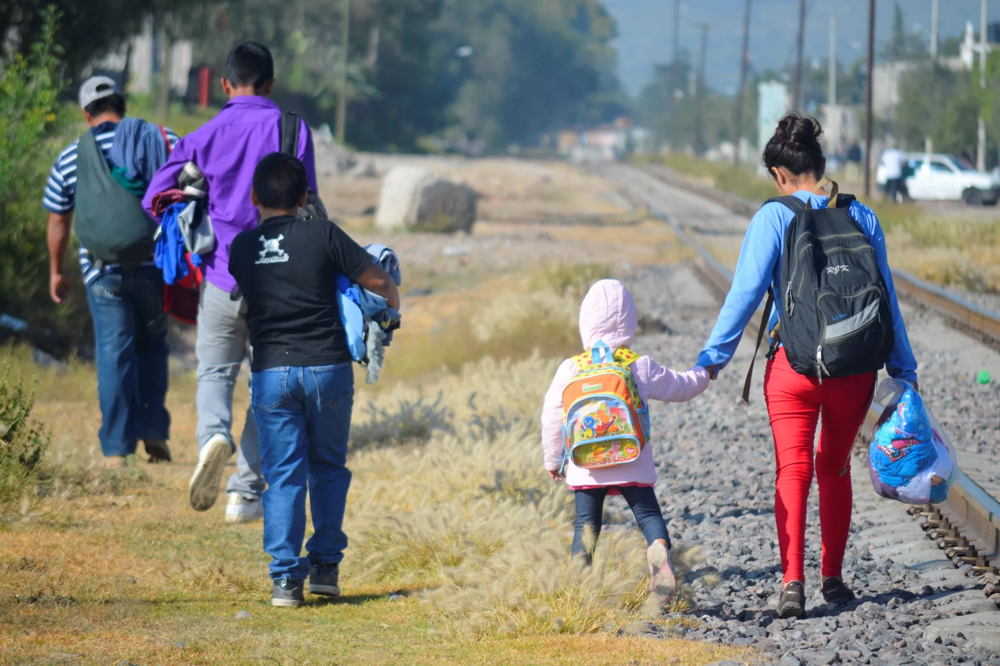

Principales causas de migración
La migración de colombianos hacia otros países ha estado influenciada por múltiples factores, entre ellos la búsqueda de mejores oportunidades laborales y educativas, la reunificación familiar, y en algunos casos situaciones de orden público y seguridad.
Principales sectores de empleo
Los colombianos en el exterior se han destacado en sectores como los servicios, la salud, la educación, el comercio y la construcción.
Retos y oportunidades
La migración también plantea desafíos relacionados con la integración social, la validación de títulos académicos y el acceso a servicios.